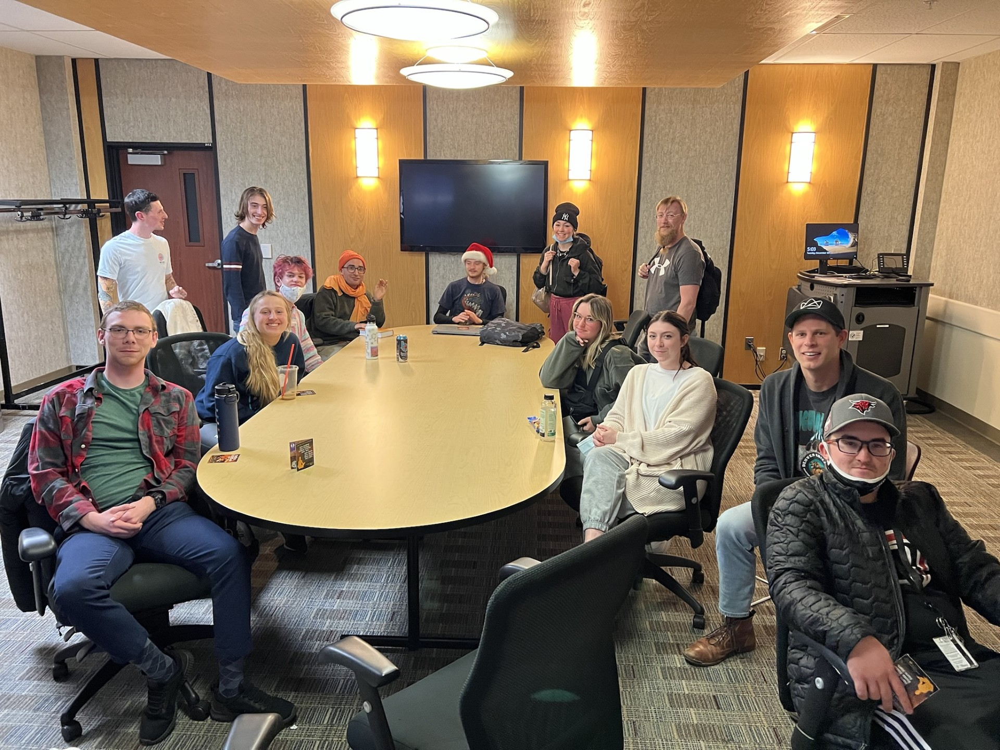
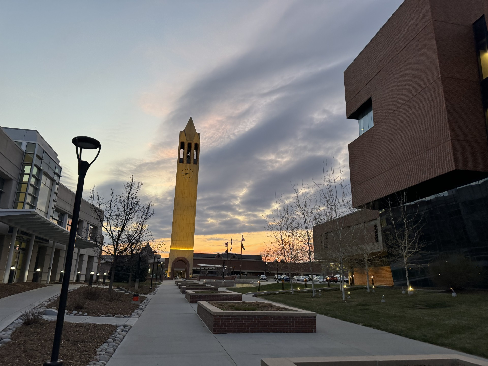
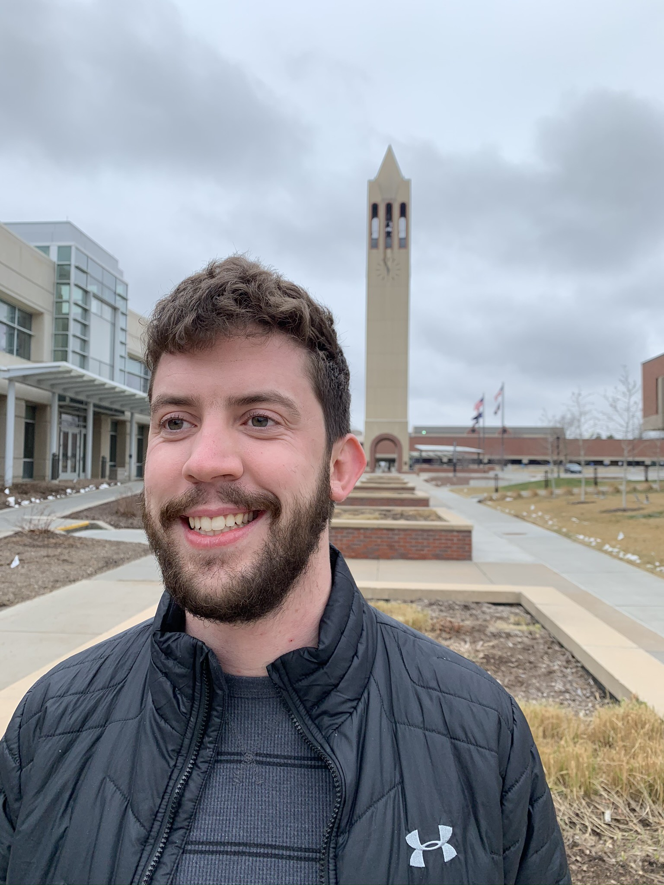

Welcome to the UNO Mindfulness Club!
At the UNO Mindfulness club, we practice (you guessed it) mindfulness. The club meets once a week during UNO's semester, and each meeting lasts for one hour. Each regular meeting is usually broken down into three sections split into 20 minutes each.
Mindfulness is...
There are no scheduled meetings at this time. Please check back near the beginning of the fall smemester.
Meet our club officers. Jonathan, pictured below, is the club president, cofounder, and codeveloper of this website.
The UNO Mindfulness Club is a student organization at the University of Nebraska at Omaha. The goal of the organization is to bring people together to practice mindfulness. The club is a place for togetherness and spirituality in a campus setting, open to all who wish to experience the benefits of mindfulness.